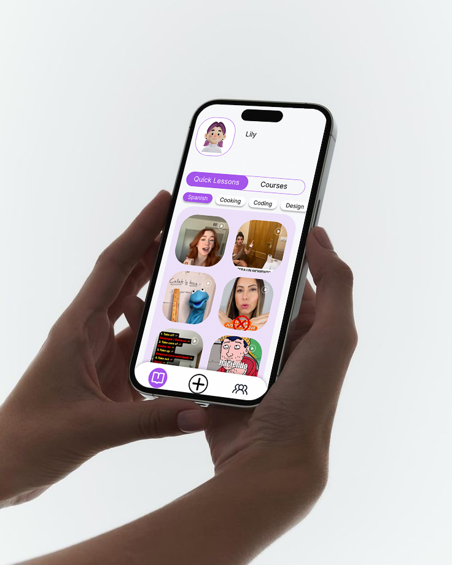
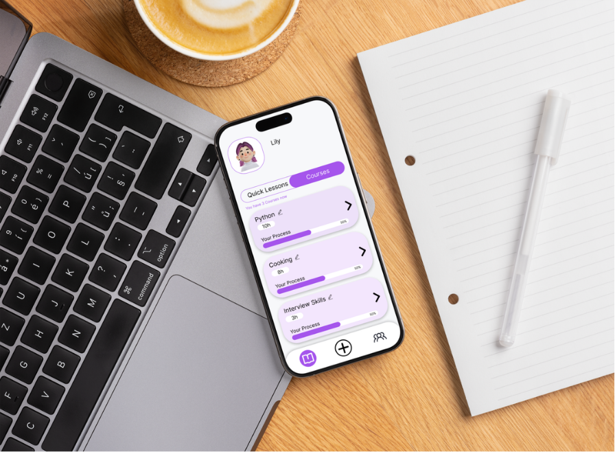
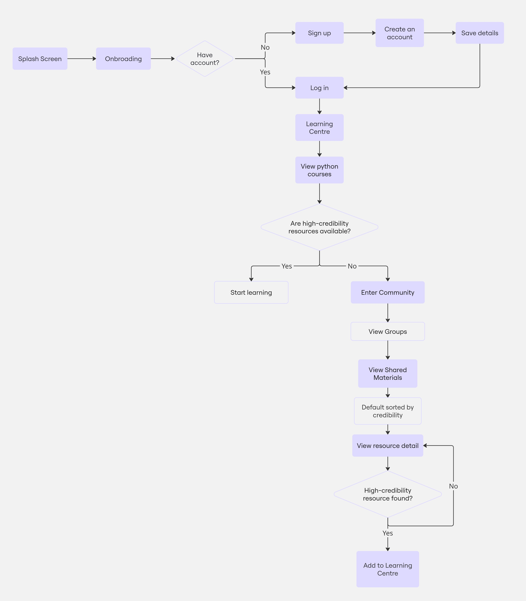
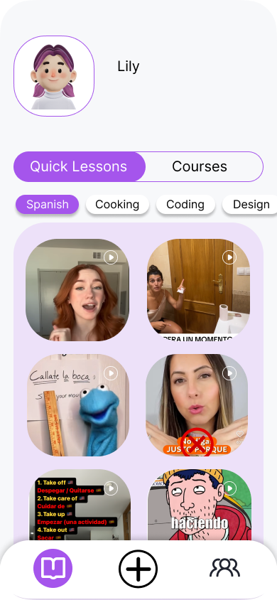
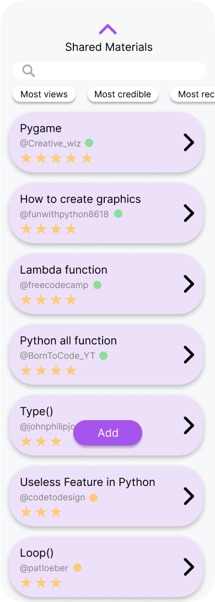
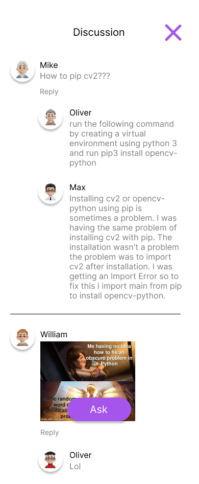

Studybuddy
StudyBuddy is a learning platform that integrates social media learning materials into a structured system, helping learners reduce distractions and stay on track.


Design Opportunity
Social media offers rich and engaging learning resources, but students often face difficulties in judging content credibility, staying focused, and organising useful materials. Irrelevant recommendations, advertisements, and unverified information can interrupt the learning process and reduce trust in online learning content. This creates an opportunity to design a more focused, credible, and personalised learning tool that helps users assess the reliability of resources, reduce distractions, and take greater control over their learning experience.

THE INSIGHTS
- Students use social media for learning, but often struggle to judge whether the content is reliable.
- Ads, irrelevant recommendations, and unrelated posts can interrupt students’ focus and reduce learning quality.
- Learning materials are spread across different platforms, making them difficult to organise and revisit.
- Students want more control over their learning space, so they can personalise content based on their goals and needs.

CORE FEATURES
Learning Center
Users can learn through both short-form quick lessons and structured courses, allowing them to choose between fragmented learning and more systematic learning pathways.
Reliable Tags
Saved and shared learning resources are evaluated by the system, with visual indicators showing the reliability level of each resource.
Study Groups
Users can discover learning communities, join study groups, share resources, ask questions, and receive peer support in a more interactive learning environment.



DESIGN GUIDANCE
Arial
abcdefghijklmnopqrstuvwxyz ABCDEFGHIJKLMNOPQRSTUVWXYZ